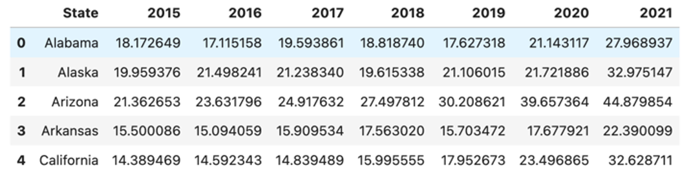
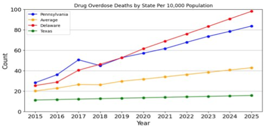

For each state, the population estimation and overdose deaths for years 2015 - 2021 were read from CDC datasets. Then, calculated the number of overdose deaths per 10,000 for every combination of state (rows) and year (columns) as can be seen below:

Fig.1 - Data Sample
Pseudo-code
Create dataset
Loop over years starting at the following to the last year in dataset up to the desired year
Loop over states (rows) in the data set
Create features (years) and targets (deaths)
Split data
Initialize Linear Regression
Fit estimator
Predict for the next year
Append the prediction to that state (row) in the dataframe
Performance
The results for 4 states are shown below. The graphs x-axis is the years, and y-axis is the count of overdose death per 10,000. The orange graph represent the average of all states, so Pennsylvania and Delaware are predicted to have more deaths than the average, whereas Texas is predicted to have lower deaths.

Fig.2 - Linear Regression Results
Limitations
State level data only has a time series of the year and the count of overdose deaths.
Overdose deaths per 10,000 calculation is based on population estimate, and not on actual population.